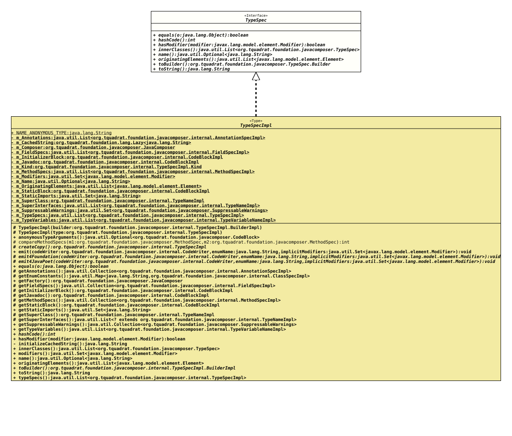

Interface TypeSpec
- All Known Implementing Classes:
AnnotationTypeSpecImpl, ClassSpecImpl, EnumSpecImpl, InterfaceSpecImpl, RecordSpecImpl, TypeSpecImpl
@ClassVersion(sourceVersion="$Id: TypeSpec.java 1085 2024-01-05 16:23:28Z tquadrat $")
@API(status=STABLE,
since="0.0.5")
public sealed interface TypeSpec
permits TypeSpecImpl
The specification of a generated class, interface, annotation or enum
declaration.
- Author:
- Square,Inc.
- Modified by:
- Thomas Thrien (thomas.thrien@tquadrat.org)
- Version:
- $Id: TypeSpec.java 1085 2024-01-05 16:23:28Z tquadrat $
- Since:
- 0.0.5
- UML Diagram
-

UML Diagram for "org.tquadrat.foundation.javacomposer.TypeSpec"
{kind=link}
-
Nested Class Summary
Nested ClassesModifier and TypeInterfaceDescriptionstatic interfaceThe specification for a builder for an instance of an implementation forTypeSpec. -
Method Summary
Modifier and TypeMethodDescriptionbooleaninthashCode()booleanhasModifier(Modifier modifier) Checks whether the given modifier was applied to this type.Returns the inner types for this type.name()Returns the name of the class, interface or enum represented by this type spec instance.Returns the originating elements for this type.Returns a new builder that is initialised with thisTypeSpecinstance.toString()
-
Method Details
-
equals
-
hashCode
-
hasModifier
Checks whether the given modifier was applied to this type.- Parameters:
modifier- The modifier.- Returns:
trueif the given modifier has been applied to this type,falseotherwise.
-
innerClasses
-
name
-
originatingElements
Returns the originating elements for this type.- Returns:
- The originating elements.
-
toBuilder
Returns a new builder that is initialised with thisTypeSpecinstance.- Returns:
- The new builder.
-
toString
-